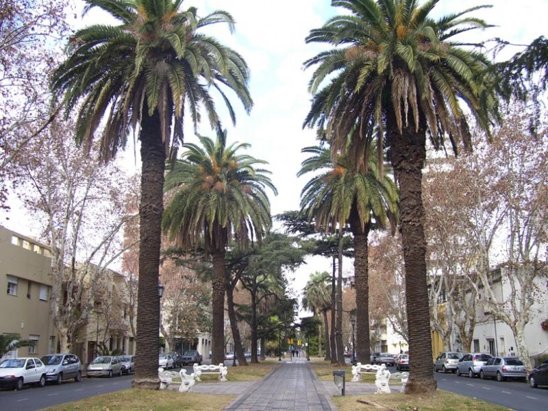

Ordenanza 9274/2014 (Oroño hasta Pellegrini) y 7974/2006 (Oroño de 27 a Segui) - Ordenanza 8125 / 2006 (Pichincha) - Áreas de protección urbanistica y arquitectonicas

ORDENANZA (N° 9.274)
"Puesta en valor del Paseo Público Boulevard Oroño" Artículo lo.- Desígnese con el nombre Paseo Boulevard Oroño, de valor histórico, cultural y patrimonial, al tramo de Boulevard Oroño comprendido desde Avenida Pellegrini hasta la barranca del río Paraná de nuestra ciudad.
Art. 5°.- Quedará prohibida la colocación y10 emplazamiento de elementos urbanos y/o publicitarios por fuera del proyecto integral "Paseo Boulevard Oroño", a fin de evitar la saturación de elementos sobre el mismo que distorsionen su esencia.
Ordenanza 7974/2006
Artículo 1º: Se crea como Área de Protección Urbanística y Arquitectónica al sector denominado “Bulevar Oroño entre Bulevar 27 de Febrero y Bulevar Seguí”, conformado por los inmuebles frentistas a Bulevar Oroño, desde la Línea Municipal Sur de Bulevar 27 de Febrero hasta la Línea Municipal Norte de Bulevar Seguí. Dicha área comprende los inmuebles frentistas a Bulevar Oroño de la Sección Catastral 11ra pertenecientes a las Manzanas 25 (excepto el Gráfico 8 S/D 3), 49, 73, 97, 121, 144, 213 y 236 (excepto el Gráfico 10 S/D 7), y los inmuebles frentistas a Bulevar Oroño de la Sección Catastral 3ra pertenecientes a la Manzana 1 (excepto el Gráfico 1), y Manzanas 20, 45, 64, 89, 114, 138, 163, 188 y 213 (excepto el Gráfico 28). (Modificado por el Art. 5º de la Ordenanza Nº 8535/10)
Artículo 2º: Se fija para el área descripta en el Art. 1º los indicadores urbanísticos que se detallan a continuación:
...
Marquesinas y/o salientes de fachada: No se permitirá la instalación de ningún tipo de estructura o elemento corpóreo saliente del plano de fachada.
Toldos: En todos los casos su diseño respetará la morfología edilicia, acompañando el ritmo y la modulación de los vanos que cubra; serán de tela, rebatibles sobre el plano de fachada, de un único color, arquitectónicamente integrados a la fachada y apoyados estructuralmente en las mismas, sin alterar la composición básica ni destruir ornamentos ni molduras, prohibiéndose la colocación de toldos fijos, de cualquier naturaleza, ni metálicos rebatibles.
Publicidad: Los elementos publicitarios deberán encuadrarse en la normativa vigente para "Sectores Protegidos" según Art. 31 del Código de Publicidad (Decreto 4.183/77). (Actual ZONA 4 de la Ordenanza 8324/2008)
Ordenanza 8125 / 2006 (Pichincha)
CAPITULO VII
DISPOSICIONES PARTICULARES
Artículo 10º: Área General.
Se establecen las características de los elementos que afectan al espacio público para los inmuebles ubicados en el Área General:
a) Antenas y Cableados: No se admite la instalación de antenas y/o cableados aéreos de cualquier tipo que se visualicen por encima o por delante de las superficies de fachadas de los edificios de valor patrimonial, de los comprendidos en las APH y de los frentistas a Av. Rivadavia y Av. del Valle. En el resto del área comprendida en el "Plan Especial Barrio Pichincha" la adecuación del cableado quedará sujeta a las respectivas resoluciones de la Secretaría de Obras Públicas, en el marco del Decreto Nº 1776/04 que establece el proceso de reordenamiento del tendido aéreo.
b) Cercos: Los establecimientos gastronómicos que lo requieran pueden colocar barandas metálicas protectoras, si lo permite el ancho de vereda en las zonas de mesas, ó recurrir a los cercos vivos verdes ó a ambos a la vez. En todos los casos deben presentar un proyecto a la Dirección de Diseño de la Vía Pública y de Equipamiento Comunitario, de la Secretaría de Planeamiento para su aprobación.
c) Defensas en esquinas: Los únicos elementos de protección admitidos son los pretiles aprobados por la Dirección de Diseño de la Vía Pública y el Equipamiento Comunitario, perteneciente a la Secretaría de Planeamiento, debiéndose en todos los casos solicitarse la autorización correspondiente.
d) Marquesinas y/o salientes de fachada:
Se permiten marquesinas en las fachadas cumpliendo con las alturas de salientes que fija esta Ordenanza, salvo en los inmuebles catalogados del Área General y aquellos ubicados en las Áreas de Protección Histórica, sobre los cuales trata el Art. 11º.
e) Toldos: Se prohíbe la colocación de toldos fijos de cualquier naturaleza y toldos metálicos rebatible. Los toldos deben ser de tela, rebatibles sobre el plano de fachada, de un único color para toda la obra, arquitectónicamente integrados a la fachada y apoyados estructuralmente en la misma. Se deben respetar las alturas mínimas que fija el Reglamento de Edificación.
El Art. 11º establece condiciones adicionales a cumplimentar para los inmuebles catalogados del Área General y aquellos ubicados en las Áreas de Protección Histórica.
f) Publicidad: Se autorizan elementos publicitarios Tipo 1 según Decreto Nº 4183/77.
No pueden en ningún caso pintarse publicidad sobre muros medianeros o en columnas de recovas si las hubiese.
Queda absolutamente prohibida la colocación de elementos de publicidad permanente u ocasional ubicados en forma perpendicular a la fachada, a excepción de los conformados por bandos verticales de tela removibles, sostenidos mediante soportes perpendiculares a la fachada, que podrán sobresalir hasta 1,20 m del plano de fachada y respetando las alturas fijadas por la normativa vigente.
El Art. 11 establece condiciones adicionales a cumplimentar para los inmuebles catalogados del Área General y aquellos ubicados en las Áreas de Protección Histórica.
Artículo 11º: Áreas de Protección Histórica e Inmuebles Catalogados.
Además de las enumeradas en el Art. 10, rigen para estas áreas e inmuebles catalogados del Área General las siguientes características particulares.
a) Marquesinas y/o salientes de fachada: No se permite el agregado de ningún tipo de estructura o elemento corpóreo saliente, a las fachadas ya existentes. Sólo se permiten marquesinas que formen parte de un proyecto integral de obra nueva y/o remodelación completa de la fachada.
b) Toldos: Tanto en el caso de edificación destinada a vivienda, como en aquella correspondiente a locales comerciales, su diseño respetará la morfología edilicia, acompañando el ritmo y la modulación de los vanos que cubran. En estos casos, deben ser de tela, rebatibles sobre el plano de fachada, de un único color para toda la obra, arquitectónicamente integrados a la fachada y apoyados estructuralmente en la misma, sin alterar la composición básica, ni destruir ornamentos ni molduras.
No pueden incluir publicidad de ningún tipo. Sólo se permite el logotipo comercial del establecimiento. Podrán iluminarse desde la fachada.
La Municipalidad de Rosario se reserva el derecho de exigir su recambio cuando por el transcurso del tiempo, los mismos presenten deterioro visible, se encuentren deslucidos ó presenten riesgos para la seguridad de los transeúntes.
c) Publicidad: Los elementos publicitarios Tipo 1 según Decreto Nº 4183/77 deben estar únicamente colocados en la parte superior de los vanos de fachadas, sin sobresalir del plano de fachada, no pudiendo superar el 20% de la superficie del vano correspondiente. Pueden ser transiluminados (backlights), opacos con letra calada iluminados desde el interior, transparentes con letras incorporadas, no permitiéndose los iluminados en ningún caso. No se permite el uso de la chapa pintada, a excepción de pintura artística tipo fileteado. La cartelería no debe interrumpir molduras, elementos o tratamientos arquitectónicos de fachada, puertas, ventanas o vanos.
Artículo 12º: Mecanismo de gestión y plazo de adecuación.
Se autoriza al Departamento Ejecutivo a requerir el desplazamiento y/o tratamiento estético de los kioscos de diarios y revistas incluidos en el Área, adecuación de carteles publicitarios existentes con permisos anteriores y/o retiro de toldos, marquesinas y cableados que no se ajusten a los requerimientos establecidos, para lo cual se determina un plazo de cumplimiento de 2 (dos) años a partir de la sanción de la presente Ordenanza.
Artículo 13º: Programas de Desarrollo Cultural y Señalización.
El Municipio, a través de las Secretarías de Cultura y Educación y de Planeamiento, impulsará proyectos de desarrollo cultural, estableciendo y/o señalizando recorridos urbanos, sitios significativos, elementos representativos de la memoria colectiva, etc.